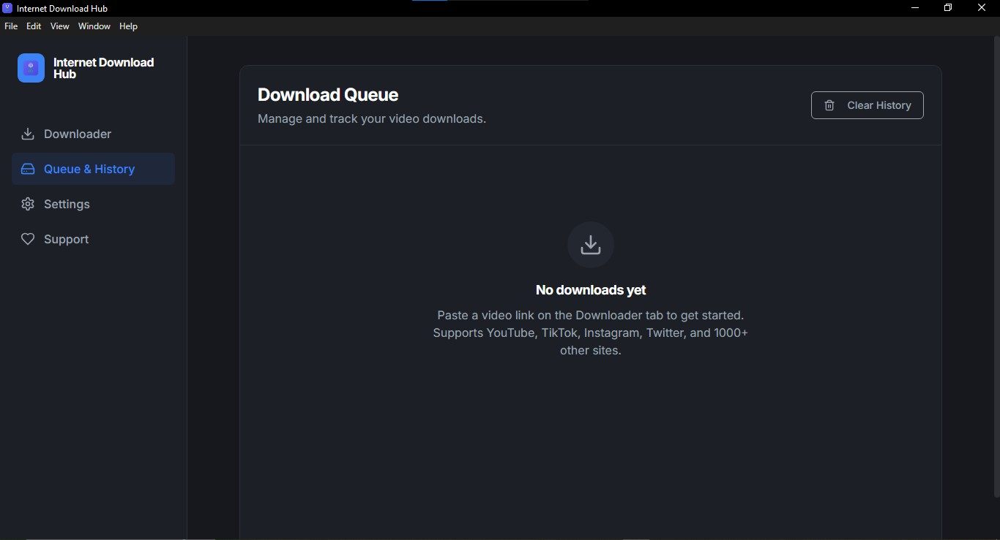

A thousand-plus sites
YouTube, TikTok, Instagram, Twitter/X, Facebook, Reddit, Vimeo, Twitch, Crunchyroll, Pixiv — and the long tail behind them. If yt-dlp knows the site, so does this.
Paste a link. Pick a quality. It lands in your folder. Over a thousand sites, four download engines that cover for each other, and absolutely nothing asking you to sign up.
Windows 10 / 11 · 64-bit
…and roughly a thousand more, courtesy of yt-dlp, gallery-dl and streamlink. See the whole list
How it goes
Copy a URL from anywhere. The app works out what site it is and which engine handles it best, then pulls the available formats.
You see the resolutions the source actually offers, with file sizes attached. Or skip video entirely and take the audio as MP3.
It queues, downloads in parallel, merges video and audio with FFmpeg, and drops the finished file where you told it to.
What’s in the box
All of it bundled in the installer. None of it your problem.
YouTube, TikTok, Instagram, Twitter/X, Facebook, Reddit, Vimeo, Twitch, Crunchyroll, Pixiv — and the long tail behind them. If yt-dlp knows the site, so does this.
yt-dlp leads. streamlink, gallery-dl and N_m3u8DL-RE step in when it can’t. You never get told to go try a different tool.
Drop in a playlist URL and it’s detected on the spot. Take all of it, a slice of it, or hand-pick. Each video queues on its own.
Several downloads at once with live speed and progress on each. Pause one, resume it later, cancel it without touching the rest.
Grab the soundtrack as MP3 for the podcast, the lecture, the track you actually wanted. FFmpeg handles the merge and the conversion.
No account, no cloud, no telemetry. Your queue and history live in a local database on your own disk. The source is MIT-licensed and public, so you don’t have to take our word for any of that.
And the part people usually trip over: no Python, no separate yt-dlp, no manual FFmpeg. Every engine ships inside the installer and works the moment setup finishes.
The actual app
Scroll or swipe sideways.




What’s new
Pulled live from GitHub Releases. Nothing trimmed, nothing summarised.
Windows 10 / 11 · 64-bit · MIT licensed
Every engine included — nothing else to install
Windows will probably warn you. The build isn’t code-signed yet, so SmartScreen throws up a blue panel. Click More info, then Run anyway. The whole source tree is on GitHub if you’d rather read it first.
Prefer not to install anything? The web version covers YouTube, TikTok, Twitter, Instagram, Reddit, Vimeo and 50-odd others. It runs on a free shared server, so it’s slower and big files can time out. The desktop build is the real one.
Questions
No, and that’s largely the point. yt-dlp, FFmpeg, streamlink, gallery-dl and N_m3u8DL-RE all ship inside the installer. If the bundled FFmpeg ever goes missing, the app quietly fetches a replacement on first use.
Yes. Paste a playlist URL and it’s recognised automatically. Download everything, pick a range, or select individual videos. Each one becomes its own queue item, so a single failure doesn’t take the batch down with it.
Import your browser cookies in Netscape format from Settings and the app can reach anything your own account can reach. Those cookies stay on your machine. They are never uploaded anywhere.
Desktop, unless you genuinely can’t install software. The web build runs on a free shared server with no history, basic quality picking and around fifty supported sites, and large files can time out. Desktop gets all thousand-plus sites, playlists, the parallel queue, history and audio extraction.
None of the above. The source code is MIT licensed and public. There is no telemetry, no account, no upsell and no download cap. If you want to do something useful with that, tell someone else about it.
macOS is on the roadmap, but there is no build yet and we’re not going to pretend otherwise. On Linux you can run the web version yourself — there’s a Dockerfile in the repo that builds the Express server with ffmpeg and yt-dlp baked in.
Files go wherever you point the app. History and the queue sit in a local database on the same machine. Nothing syncs, because there is nothing to sync to.
That depends on the content and where you live, and it’s your call to make. The app only reaches material that is publicly available or that your own credentials unlock. It’s an 18+ tool and the installer shows the EULA before it does anything.